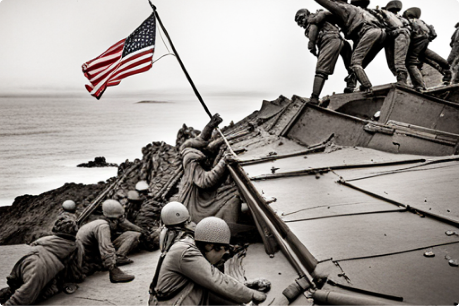

The Battle of Iwo Jima
By John Doe. Publisheed on Jun 6, 2021
The Battle of Iwo Jima was a major battle in which the United States Marine Corps and Navy captured the island of Iwo Jima from the Imperial Japanese Army during World War II. The American invasion, designated Operation Detachment, had the goal of capturing the entire island, including the three Japanese-controlled airfields, to provide a staging area for attacks on the Japanese main islands. This five-week battle comprised some of the fiercest and bloodiest fighting of the Pacific War of World War II.
The battle is best known for the iconic photograph Raising the Flag on Iwo Jima, taken by Associated Press photographer Joe Rosenthal. The battle led to the death of almost 7,000 US servicemen and over 20,000 Japanese soldiers. After the end of the war, it was discovered that the island was of little strategic value to the Americans and was used mostly as an emergency landing strip for damaged bombers. The capture of Iwo Jima allowed the US to launch the bombing campaign against Japan, which included the atomic bombings of Hiroshima and Nagasaki.